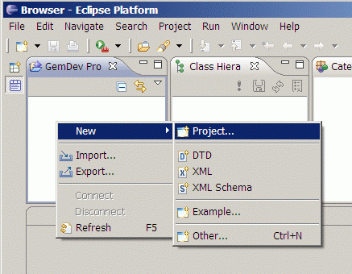
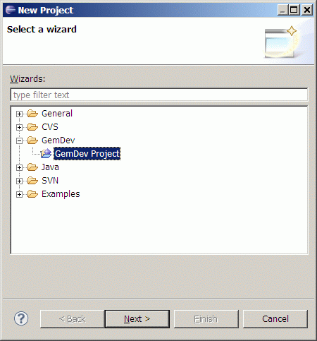
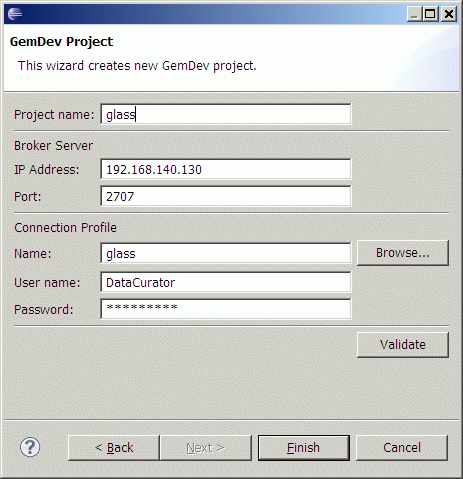
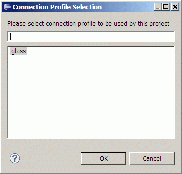

Creating a New GemDev Project
Switch to Browser Perspective (in main menu Window > Open
Perspective > Other... and
choose Browser).
This is perspective simulating traditional Smalltalk Browser for
editing code.
In GemDev Projects view context menu select New > Project...

In next step choose GemDev >
GemDev Project

In next step you can configure connection configuration used by this
project:

- Project name - name of eclipse project in current workspace
- Broker server
- IP address - where is running broker server script
providing connection to GemStone (default is IP address of VMware image)
- Port - broker server is listening on well know port for
request for connection to GemStone databases (default is 2707)
- Connection profile
- Name - each connection profile has unique name per broker
server, configured in broker server script
- User name - this is name of GemStone user which will be
used when creating new GS session in target database
- Password - this is password of GemStone user
See Installation
chapter for details about Broker server and Connection profile
configuration.
You can choose from available connection profiles on broker server by
pressing Browse... button. This button will connect to broker server on
entered address and port. In case there is connection error it will
display error message. But in case connection succeeded you will be
offered list of all connection profiles configured on target broker
server.

By using Validate button you can check if entered values are valid and
it is possible to use them for connecting to GemStone database before
creating the project itself. (values can be changed after creation of
project in project properties on Properties >
Broker Server page)
After pressing Finish
button the project will be created in Eclipse
workspace.